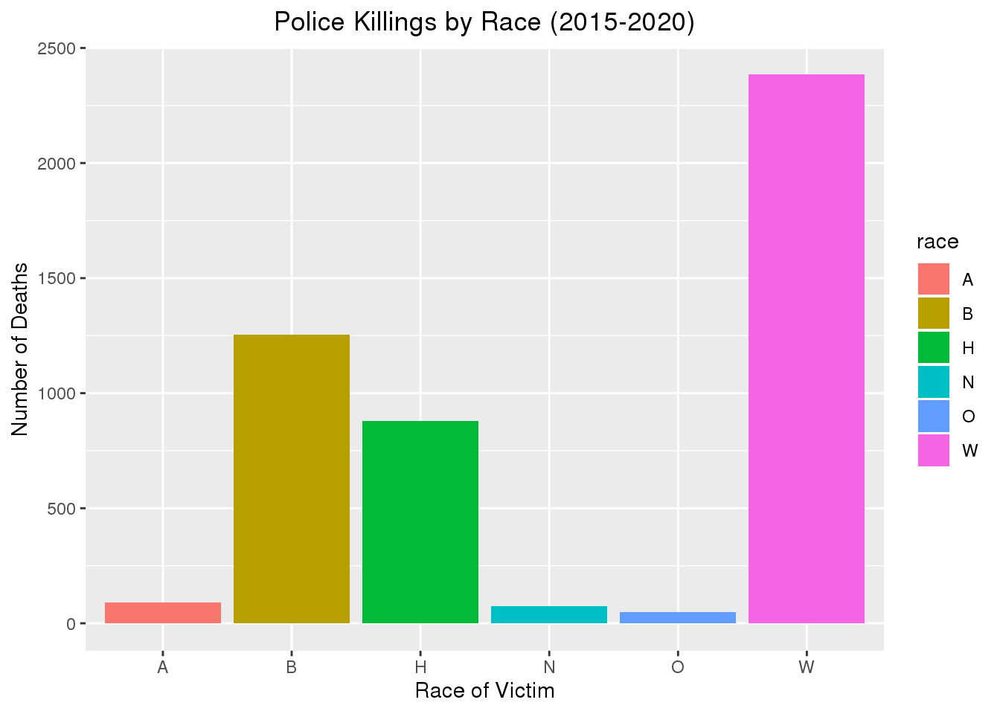

library(here)
library(ggplot2)
library(tidyverse)
library(readxl)
library(tinytex)
library(maptools)
library(fivethirtyeight)
knitr::opts_chunk$set(echo = FALSE, tidy = TRUE)
police2 <- read.csv(file = here::here("police_data", "police_killings.csv"))
police4 <- read.csv(file = here::here("police_data", "fatal-police-shootings-data.csv"))
head(police2)## name age gender raceethnicity month day year
## 1 A'donte Washington 16 Male Black February 23 2015
## 2 Aaron Rutledge 27 Male White April 2 2015
## 3 Aaron Siler 26 Male White March 14 2015
## 4 Aaron Valdez 25 Male Hispanic/Latino March 11 2015
## 5 Adam Jovicic 29 Male White March 19 2015
## 6 Adam Reinhart 29 Male White March 7 2015
## streetaddress city state latitude longitude state_fp
## 1 Clearview Ln Millbrook AL 32.52958 -86.36283 1
## 2 300 block Iris Park Dr Pineville LA 31.32174 -92.43486 22
## 3 22nd Ave and 56th St Kenosha WI 42.58356 -87.83571 55
## 4 3000 Seminole Ave South Gate CA 33.93930 -118.21946 6
## 5 364 Hiwood Ave Munroe Falls OH 41.14857 -81.42988 39
## 6 18th St and Palm Ln Phoenix AZ 33.46938 -112.04332 4
## county_fp tract_ce geo_id county_id namelsad
## 1 51 30902 1051030902 1051 Census Tract 309.02
## 2 79 11700 22079011700 22079 Census Tract 117
## 3 59 1200 55059001200 55059 Census Tract 12
## 4 37 535607 6037535607 6037 Census Tract 5356.07
## 5 153 530800 39153530800 39153 Census Tract 5308
## 6 13 111602 4013111602 4013 Census Tract 1116.02
## lawenforcementagency cause armed pop share_white share_black
## 1 Millbrook Police Department Gunshot No 3779 60.5 30.5
## 2 Rapides Parish Sheriff's Office Gunshot No 2769 53.8 36.2
## 3 Kenosha Police Department Gunshot No 4079 73.8 7.7
## 4 South Gate Police Department Gunshot Firearm 4343 1.2 0.6
## 5 Kent Police Department Gunshot No 6809 92.5 1.4
## 6 Phoenix Police Department Gunshot No 4682 7 7.7
## share_hispanic p_income h_income county_income comp_income county_bucket
## 1 5.6 28375 51367 54766 0.9379359 3
## 2 0.5 14678 27972 40930 0.6834107 2
## 3 16.8 25286 45365 54930 0.8258693 2
## 4 98.8 17194 48295 55909 0.8638144 3
## 5 1.7 33954 68785 49669 1.3848678 5
## 6 79 15523 20833 53596 0.3887044 1
## nat_bucket pov urate college
## 1 3 14.1 0.09768638 0.16850951
## 2 1 28.8 0.06572379 0.11140236
## 3 3 14.6 0.16629314 0.14731227
## 4 3 11.7 0.12482727 0.05013293
## 5 4 1.9 0.06354983 0.40395421
## 6 1 58 0.07365145 0.10295519head(police4)## id name date manner_of_death armed age gender race
## 1 3 Tim Elliot 2015-01-02 shot gun 53 M A
## 2 4 Lewis Lee Lembke 2015-01-02 shot gun 47 M W
## 3 5 John Paul Quintero 2015-01-03 shot and Tasered unarmed 23 M H
## 4 8 Matthew Hoffman 2015-01-04 shot toy weapon 32 M W
## 5 9 Michael Rodriguez 2015-01-04 shot nail gun 39 M H
## 6 11 Kenneth Joe Brown 2015-01-04 shot gun 18 M W
## city state signs_of_mental_illness threat_level flee
## 1 Shelton WA True attack Not fleeing
## 2 Aloha OR False attack Not fleeing
## 3 Wichita KS False other Not fleeing
## 4 San Francisco CA True attack Not fleeing
## 5 Evans CO False attack Not fleeing
## 6 Guthrie OK False attack Not fleeing
## body_camera
## 1 False
## 2 False
## 3 False
## 4 False
## 5 False
## 6 FalseUsing data obtained from FiveThirtyEight, collected from The Washington Post and the US Census, the dataset I am going to analyze will consist of fatal police killings in the United States from 2015-2020. The variables in the files include the date of the incident, state, name of deceased, race, gender, ect. The US population data is from the US Census Bureau website. There are 22,800 observations and 10 variables in the “clean_data.csv” file, which go into depth about police killings The “police_killings.csv” goes into depth about the police killing, which has 467 observations, and 34 variables. On the last dataset, the data is a collected from multiple police station from the biggest cities in the United States. With all the different data available, there should be enough data for me to analyze. In this project, I am going to look through data which explores fatal shootings by on duty police officers since 2015. Analyzing this data, I will be asking a variety of questions to help further understand my knowledge on police killings. As I continue to ask many questions, I will try to create a visualization of the interpretations I will gather. I will be making graphs using ggplot in R.
Using the “police_killings.csv” data I will analyze where these police killings tend to happen more frequently, looking for trends like if there is a state with notably more killings than other states. I will preform this analysis with grouping, filtering, and creating a spacial map with ggplot to visualize my analysis.
police2 %>% ggplot(aes(longitude, latitude, color = raceethnicity)) + borders("state") +
geom_point() + coord_quickmap() + ggtitle("Police Killings in 2015") + theme(plot.title = element_text(hjust = 0.5))In the graph above, the points show where the killing exactly occured in United States in the year of 2015 alone. I plotted the longitude on the x axis and latitude on the y axis, and the results shows that there were more police killings on the east side of the United States compared to the West. I also colored the dots to show what race was being killed.
police4 %>% ggplot(aes(x = state, fill = state)) + geom_bar() + theme(legend.position = "none") +
theme(axis.text.x = element_text(angle = 90)) + ggtitle("Pollice Killings by State 2015-2020") +
theme(plot.title = element_text(hjust = 0.5))In the graph above, I was wanting to answer the question of which states tend to have the most police killings. From the results, it shows that California has significantly more police killings than any other state in the United States. This could be of many reason, for example population, size of police task force, and even the crime rate. The two states with the most fatal police killings are also the two most populated states in the United States.
Again, using the “police_killings.csv” data, I will group the police killings by race and compare the number of killings by race. Using the same data I will also be analyzing which gender tends to be killed more often by police officers. In order to analyze this, I will group by race on one graph and group by gender on another and will be visualizing my findings with a bar chart for easy comparison.
police4 %>% filter(race != "") %>% ggplot(aes(x = race, fill = race)) + geom_bar() +
ggtitle("Police Killings by Race (2015-2020)") + theme(plot.title = element_text(hjust = 0.5)) +
ylab("Number of Deaths") + xlab("Race of Victim")
head(police4)## id name date manner_of_death armed age gender race
## 1 3 Tim Elliot 2015-01-02 shot gun 53 M A
## 2 4 Lewis Lee Lembke 2015-01-02 shot gun 47 M W
## 3 5 John Paul Quintero 2015-01-03 shot and Tasered unarmed 23 M H
## 4 8 Matthew Hoffman 2015-01-04 shot toy weapon 32 M W
## 5 9 Michael Rodriguez 2015-01-04 shot nail gun 39 M H
## 6 11 Kenneth Joe Brown 2015-01-04 shot gun 18 M W
## city state signs_of_mental_illness threat_level flee
## 1 Shelton WA True attack Not fleeing
## 2 Aloha OR False attack Not fleeing
## 3 Wichita KS False other Not fleeing
## 4 San Francisco CA True attack Not fleeing
## 5 Evans CO False attack Not fleeing
## 6 Guthrie OK False attack Not fleeing
## body_camera
## 1 False
## 2 False
## 3 False
## 4 False
## 5 False
## 6 Falsepolice4 %>% filter(gender != "") %>% ggplot(aes(gender, fill = gender)) + geom_bar() +
xlab("Gender of Victim") + ylab("Number of Fatal Deaths") + ggtitle("Fatal Police Killings by Gender")The variable for the graphs above go as follows: M-Male, F-Female, W-White, B-Black, H-Hispanic, A-American Native, S-Asian,and O-Unknown. Using the data set, the results tend to show that white’s are getting killed more often than any other race. Also, results show that male tend to be killed far more often than female. This could be of many factors that I am unable to draw conclusions from at the time. The data above included blank/unknown spaces in the dataset, so I had to filter those unknown spaces to better visualize my findings. The answer that there are more white’s getting killed might be because there are more white people in the United States. Therefore, we are unable to tell which race gets killed by the police more often based off the percent of race makes up in the United States. Additionally, the rate of fatal police shootings among certain race could be much higher than that for any other ethnicity. Regardless, it is undeniable that men tend to be killed far more often than women from police officers.
Using the dataset, I will be asking questions like of how victims are getting killed by police, taking into consideration if the police officer felt threatened, if body cameras were utilized, and if the victim tried to flee.
police4 %>% ggplot(aes(manner_of_death, fill = manner_of_death)) + geom_bar() + ggtitle("Manner of Death of Police Killings Victims") +
xlab("Manner of Death") + ylab(" Number of Deaths")As the results shown above by the graph, it tends to show that victim are mostly always killed by being shot. The two variable are quite similar, as the only difference is that if a taser would have been involved in the death.
police4 %>% filter(race != "") %>% ggplot(aes(threat_level, fill = body_camera)) +
geom_bar() + ggtitle("Victims Threat levels to Police") + xlab("Threat Level") +
ylab("Number of Deaths per Threat Level")The victim of police killings tend to be killed more often if they are considered to be to show an “attack” to the police officer. There could be many reasons of this, and one of those reasons could be that the definition of an “attack” could be different to person to person. So, there could be no way to draw a definite conclusion to this question. Though, I was able to fill the bars of data of each threat level to determine if there was body camera footage to the police killing. I noticed that in most deaths the police were not using the cameras or were turned off. The results of this analysis surprised me as the years of this data was being collected from 2015-2020, which I would suppose that the majority of cops would have a body camera at that point of time.
police4 %>% filter(flee != "") %>% ggplot(aes(x = signs_of_mental_illness, fill = flee)) +
geom_bar() + ggtitle("Signs of Mental Illness in Victims") + xlab("Signs of Mental Illness?") +
ylab("Number of Police Killing Deaths")In my analysis above, the graph answers the question if the victims of the police killings showed signs of mental illness. Along with comparing these in a bar chart, I filled the chart to show if the victim tried to flee, and if so how they did so. Regardless, from the data, there shows to be more victim deaths if they did not show signs of mental illness.
In conclusion, while this data set doesn’t capture the United State’s full history of police violence, this does offer important information on trends that occurred in the passed 5 years. It is important to recognize which race groups and genders tend to be killed more, as data might not complete show the complete picture. Also, noting that the views of this dat could potentially be biased, as the other side of the story is unable to be told.